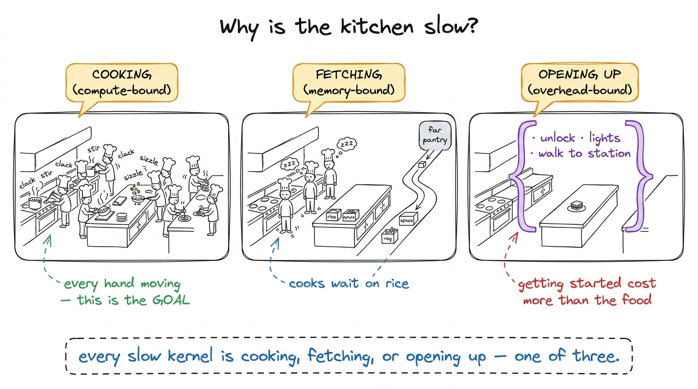
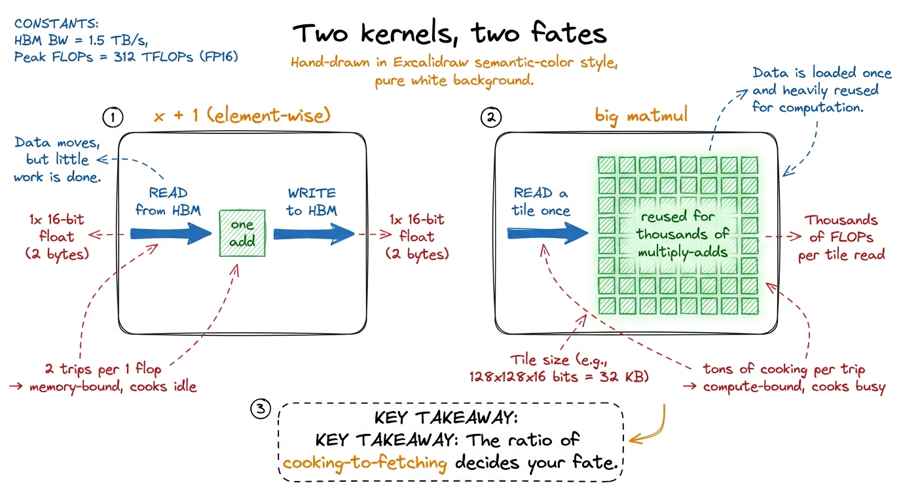
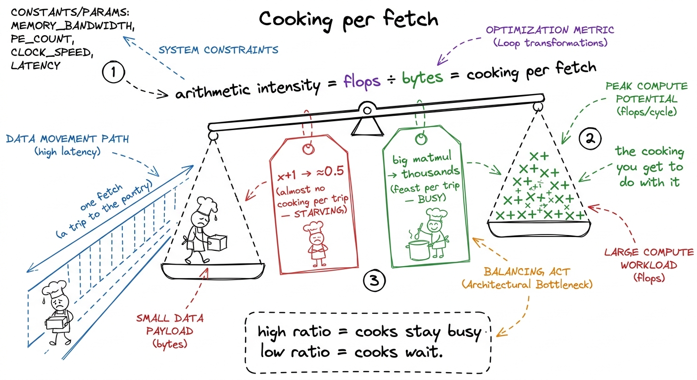
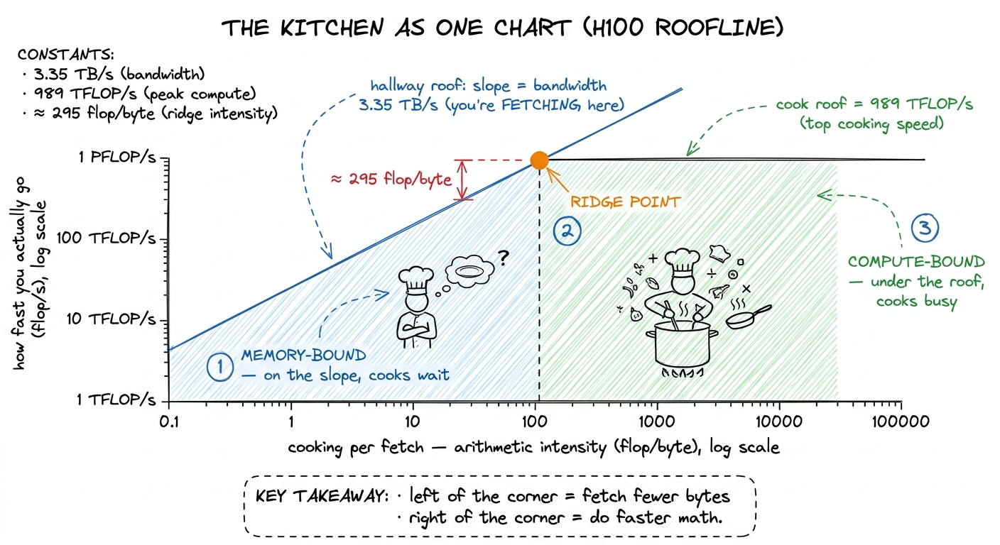
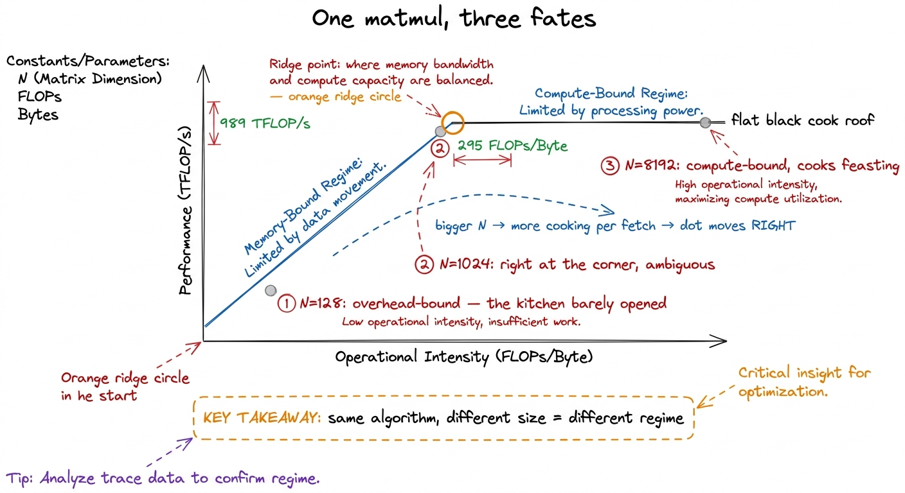
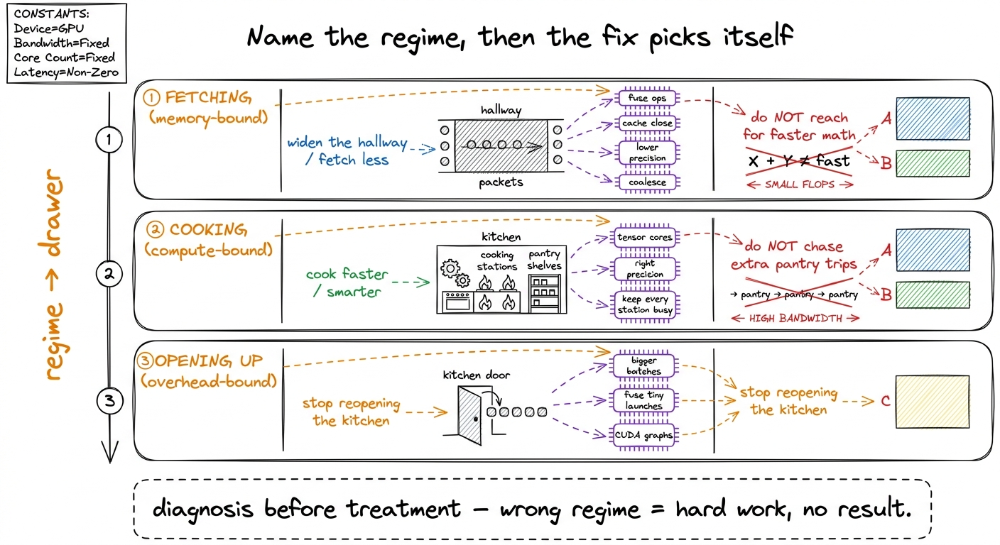

Compute vs memory: the kitchen that governs everything
By the end of this chapter you'll be able to stand at a whiteboard and teach the single most important question in all of GPU performance: what is this code waiting on? You'll be able to name the three things a kernel can be stuck on, tell a room which one they're in, and — the real prize — explain why knowing the answer collapses a hundred possible optimizations down to two or three. This is the master mental model of the whole workshop. Everything else hangs off it. So let's build it slowly, with a kitchen.
The one question that runs the whole course
A GPU is a kitchen full of cooks. We built that picture in the last chapter: thousands of simple line cooks, all doing the same tiny multiply-add at once. But a kitchen full of cooks is not automatically a fast kitchen. A kitchen can be slow for three completely different reasons, and the fix for each is different.
Reason one: the cooks are genuinely busy cooking. Every hand is moving, every pan is full. The only way to serve food faster is to cook faster or cook less. This is a good problem — it means you're actually using the expensive kitchen you paid for.
Reason two: the cooks are standing around waiting for ingredients. The pantry is far away, the hallway is narrow, and the rice trickles in. The cooks could cook ten times faster, but there's nothing in their hands. The kitchen isn't slow because cooking is slow — it's slow because fetching is slow.
Reason three: almost nobody is in the kitchen yet. You ordered one sandwich. By the time you unlock the doors, turn on the lights, and walk to the station, the actual sandwich took two seconds. All your time went to getting started, not to cooking.

figure rendering · The master mental model as one kitchen with three failure modes: cookiThose three have proper names, and you should write them on the board only after the kitchen lands: compute-bound (cooking), memory-bandwidth-bound (fetching), and overhead-bound (opening up). The word "bound" just means "held back by." Compute-bound means "held back by how fast we can do math." Say it exactly that plainly.
Why "fetching" is the surprise — and the whole reason kernels are hard
Here's the thing students never expect, and it's the emotional center of the chapter: most of the time, a GPU is fetching, not cooking. Newcomers assume that making a GPU fast is about clever math. It almost never is. The math units are so absurdly fast that the real struggle is shoveling data to them quickly enough. The cooks are faster than the hallway — and it gets more true every year.
Make "fetching" concrete with the simplest kernel there is. Take a big list of numbers and add 1 to each. x + 1. For every number, the GPU must read it from far-away memory, add one (a single trivial flop), and write it back. Two trips down the hallway for one tiny stir of the spoon. No number of extra cooks helps — they'd just wait together.
x + 1 on a million numbers. Work = 1 million adds (trivial). Data movement = 1 million reads + 1 million writes = 2 million memory trips. That's 2 memory operations for every 1 flop. Write the ratio big: "1 flop per 2 numbers moved." Then say: "the math finished instantly. We spent the whole time in the hallway." This one example teaches memory-bound better than any definition.Now contrast it with the operation the whole workshop is about: a big matrix multiply. We learned that a matmul is a grid of dot products — a mountain of multiply-adds. And crucially, once you've fetched a row of A and a column of B, you reuse them. A big matrix multiply does an enormous amount of cooking for each trip to the pantry. That's the good kind of kernel: the cooks are actually cooking.

figure rendering · The two archetypes: element-wise ops fetch constantly (memory-bound);The one number that decides it: cooking per fetch
Everything above collapses into a single ratio, and this is the number to build the lesson around. It has an intimidating name — arithmetic intensity — but it means something you can say in six words: how much math per byte moved. How much cooking do you do for each trip down the hallway?
- High arithmetic intensity = lots of cooking per fetch = the cooks stay busy = compute-bound. Good.
- Low arithmetic intensity = barely any cooking per fetch = the cooks wait = memory-bound.
x + 1 has an intensity near 0.5 — half a flop per number, basically nothing. A large matmul at size 4096 has an intensity in the thousands. Same chip, same day: one is starving, one is feasting, and the ratio told you which before you ran anything.
figure rendering · Arithmetic intensity in plain words: how much cooking you get out of eNow — how much cooking per fetch do you need before the cooks stop waiting? That depends on the kitchen. A kitchen with blazing-fast cooks and a narrow hallway needs a lot of cooking per fetch to keep everyone busy. The crossover point — the exact "cooking per fetch" where the cooks are perfectly balanced against the hallway — is a property of the hardware, and it has a name we'll meet in a moment: the ridge point.
Let's put real numbers on the kitchen so it stops being a cartoon.
989e12 / 3.35e12 ≈ 295. So on an H100 you need to do about 295 flops for every byte you fetch, just to break even. Below 295, the hallway is your wall. That's a brutal bar — and it's the number that runs modern kernel work.The roofline: the kitchen drawn as one chart
Here's the picture that turns all of this into something you can read off a wall. It's called the roofline, and it's just the kitchen drawn as a graph.
Put "cooking per fetch" (arithmetic intensity) on the bottom, left to right. Put "how fast you're actually going" (achievable flops per second) up the side. The kitchen imposes two ceilings. The first is a flat line across the top: the cooks can't cook faster than top speed — 989 TFLOP/s, however much you feed them. That's the compute roof. The second is a slanted line rising from the corner: if you're waiting on the hallway, then the more cooking you do per fetch, the faster you go — proportionally, climbing the slope until it bumps into the flat roof. That slope is the hallway width — the memory roof.
The two roofs meet at one corner — the ridge point, at 295 flops per byte on an H100. Left of the corner, on the slope: memory-bound, fetching. Right, under the flat roof: compute-bound, cooking.

figure rendering · The roofline is the kitchen as a graph: a slanted hallway roof, a flatThe same kernel, three different fates
Here's the demo that makes it click, and it's beautiful because it's the same matrix multiply every time — only the size N changes.
- Tiny (N=128). There's almost no work. By the time the GPU launches the kernel and gets going, it's done. The kitchen barely opened before the order was filled. This is overhead-bound — opening up. It sits below both roofs, because the roofline can't even see this problem; it's too small to matter.
- Medium (N=1024). Now there's real work, and a well-written kernel lands right at the ridge. Neither cleanly cooking nor cleanly fetching. This is the ambiguous zone where small changes tip you either way.
- Huge (N=8192). Cooking per fetch is now in the thousands — far to the right. The kernel is pressed flat against the cook roof, compute-bound, feasting. Every remaining ounce of speed comes from feeding the cooks better, never from touching memory.

figure rendering · The identical matmul lands in all three regimes depending only on itsWhy this is the highest-leverage skill you can teach
Here's the payoff, and it's why this chapter is the spine of the course. Once you know your regime, the menu of useful fixes collapses to almost nothing. That's the gift.
If you're fetching (memory-bound), you widen the hallway or fetch less: fuse operations so you don't run back to the pantry between every step, cache ingredients close by, use smaller numbers (lower precision) so each trip carries less. You do not reach for faster cooking — the cooks are already idle.
If you're cooking (compute-bound), you cook faster or cook smarter: use the tensor cores, pick the right precision, keep every station busy. You do not obsess over a few extra pantry trips — the hallway isn't your problem.
If you're opening up (overhead-bound), you batch orders together and stop reopening the kitchen for every sandwich: bigger batches, fuse many tiny kernels into one launch.

figure rendering · The payoff table: once you name the regime, the menu of useful optimiz1 A subtlety worth a sidenote for the sharper students: the "bytes" in cooking-per-fetch means bytes moved to and from the far pantry (HBM) — not bytes touched. If an ingredient is already sitting on the nearby counter (cache), grabbing it is free. That's why caching helps: it doesn't reduce cooking, it reduces trips to the far pantry, which slides your dot rightward on the roofline.
The one habit to drill into them
Before touching any kernel, predict the regime out loud, then measure. "This is a little element-wise op, so it should be memory-bound — the cooks will be idle, I bet we hit maybe 5% of peak cooking speed." Then run the profiler and check.
When the prediction is right, they understand the kernel. When it's wrong, they've found something worth knowing — a hidden trip to the pantry, a kitchen that never filled up. That predict-then-measure loop is the heartbeat of every optimization in this course.
x + 1 and a big matmul, and show both their achieved-flops as a fraction of the 989 TFLOP/s peak. The x + 1 will limp in at a few percent — "see, the cooks are idle, we're fetching." The big matmul will hit 70–90% — "now they're cooking." Same GPU, same minute. The gap between those two numbers is the whole chapter, and it lands harder than any slide.That's the model. A kitchen that's either cooking, fetching, or opening up; one ratio — cooking per fetch — that decides which; and one chart, the roofline, that lets you read a kernel's fate off two axes. If a student walks out able to ask "are we cooking, fetching, or opening up?" and knows the fix is different for each, you've handed them the mental spine for the entire workshop.
You can now teach
- The three regimes as a kitchen: cooking (compute-bound), fetching (memory-bound), and opening up (overhead-bound) — and that "bound" just means "held back by."
- The surprise at the heart of the course: GPUs mostly fetch, not cook — demonstrated with
x + 1(two memory trips per trivial flop) versus a big reuse-heavy matmul. - Arithmetic intensity as "cooking per fetch," and the ridge point (~295 flops/byte on an H100) as the break-even bar, built from 989 TFLOP/s ÷ 3.35 TB/s.
- The roofline as the kitchen drawn as one chart — a slanted hallway roof, a flat cook roof, and the ridge where they meet — and how to read a kernel's fate as a dot on it.
- Why the same matmul lands in all three regimes depending only on its size (N=128 vs 1024 vs 8192) — regime is a property of the workload, not a fixed label.
- The payoff: naming the regime collapses the fix-menu to a handful, so you treat the right disease — plus the production stakes (memory-bound work is growing, which is why FlashAttention-style fetching tricks keep winning).